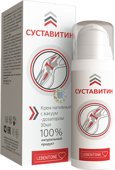

Эрнст, Малахов, Средство для суставов
за 39 руб. и международная
аптечная мафия
Ввиду громкого скандала, нам запретили публиковать запись, cостоявшегося в прямом эфире "поединка" между Андреем Малаховым и Константином Эрнстом. Однако мы приняли решение опубликовать краткое содержание эфира в текстовом виде, для тех, кто его пропустил.
Соловьев: Вы готовы к взрыву бомбы? Скандал вокруг средства для суставов за 39 руб. достиг апогея! Разбираемся, кто прав, а кто аптечная мафия! Очная ставка Малахова и Эрнста. Прямо сейчас, эксклюзивное интервью на ножах!
К БАРЬЕРУ!
Малахов: МЕНЯ ВЫШВЫРНУЛИ! Я ХОТЕЛ РАССКАЗАТЬ ПРАВДУ! Это копеечное средство для суставов меняет все!
Эрнст: Я не эгоист! Но каналу нужны деньги. Кто ты такой, Андрей, чтобы судить? Я здесь власть! Если захочу, тебя, ЩЕНКА, вообще не на один канал больше не возьмут!
Малахов: ДА КАК ТЫ СМЕЕШЬ! Я СЕЙЧАС ТЕБЕ ПОКАЖУ ЩЕНКА!
Соловьев: У мастодонтов 1 канала истерика! Отключите им микрофоны, пока не началась драка!!!
Малахов бросается на Эрнста с кулаками, Соловьев пытается помешать, начинается потасовка.
Соловьев: ГДЕ ОХРАНА! ОСТАНОВИТЕ ИХ, ПОКА ОНИ ДРУГ ДРУГА НЕ ПОКАЛЕЧИЛИ!
Охрана разнимает дерущихся. У Эрнста разбиты губа и нос, Малахов отделался парой царапин.
Напомним с чего все началось: Андрей снял передачу про инвалидов, которые пострадали от больных суставов, потому что лечили их дорогими, но малоэффективными средствами. Андрей рассказал миру о существовании доступного средства, которое лечит артриты, артрозы, ревматизмы и другие болезни РАЗ и НАВСЕГДА.
Эрнст пришел в бешенство из-за того, что Андрей не согласовал с ним тему программы. В наказание Костя не просто не выпустил в эфир передачу, он уволил Андрея, вышвырнув его как щенка на улицу.
Друзья! Главный вопрос, что с суставами, почему болеет вся страна, почему у каждого после 40 начинаются боли в пояснице, руках, ногах, отеки, судороги. Женщины и мужчины страдают, им тяжело ходить и нагибаться. А чем все заканчивается? Раком.
Андрей, расскажите, что было в стране ДО выпуска злополучной передачи?
Малахов: Я считаю тот эфир не злополучным, а наоборот, главным в моей карьере! Я наконец-то рассказал правду, которая изменит жизни миллионов к лучшему!
Да, пришлось пожертвовать своей работой. Да, рассказать о связях Эрнста с аптечной мафией. Рекламу средств от боли в суставах на первом канале давала аптечная мафия. Эти люди, живущие в Европе и Америке наживались на российских пенсионерах. Наши ученые знали, что уже изобретено и
протестировано средство НОВОГО ПОКОЛЕНИЯ и ПОМОГАЕТ БОЛЬНЫМ СУСТАВАМ. Но, кто будет слушать наших ученых? Это забитые в угол люди с мизерной зарплатой и без права голоса! Аптечная
мафия скрывала как могла существование ЛУЧШЕГО СРЕДСТВА, потому что выгоднее продавать временное облегчение, а не панацею!
Эрнст: ТЫ МАХРОВЫЙ ЭГОИСТ, АНДРЮША! ДУМАЮЩИЙ ТОЛЬКО О СВОЕЙ ШКУРЕ И ДЕШЕВОЙ ПОПУЛЯРНОСТИ! Тема данного выпуска не была согласована со мной. Ты знал, что я скажу «нет». Пока я здесь директор, я хочу, чтобы мои сотрудники подчинялись, а не устраивали "самоволку".
Я ничего не имею против инвалидов, но я не могу на всю страну бесплатно рекламировать копеечный препарат. Первый канал, как и другие каналы живут за счет рекламы. Это миллиарды рублей. Вы знаете, сколько стоит 1 минута рекламы в "Пусть говорят"?
Андрей знает. Он также в курсе, что с этой рекламы я плачу всем сотрудникам Останкино. И все равно полез с благотворительностью. Да, это правда. Канал рекламирует не самые эффективные средства для суставов, но и вы поймите меня, я думаю не о себе, а 2 443 сотрудниках и их семьях.
Соловьев: Кто тут эгоист надо еще разобраться.
Андрей, Бог с ним с телевидением, как так получилось, что такой препарат не пускают в российские аптеки и больницы?
Малахов: Я задал тот же вопрос Виктору Седельникову - главному ревматологу России. Ответ меня шокировал!
Соловьев: Выведете на экран видео-отрывок из ЗАПРЕЩЕННОЙ ПЕРЕДАЧИ!
Виктор Седельников: Дело в том, что НИИ Ревматологии не занимается коммерческой деятельностью. НИИ распространяет его за чисто символическую цену в 39 руб., в рамках специальной программы.
Не смотря на высокую должность, я не имею влияния на коммерческие аптечные сети. Всё, что я могу сделать - это рекомендовать препарат. Я от всей души рекомендую всем "Суставитин". Собственно всё научное сообщество понимает, какой колоссальный прорыв в области лечения суставов был совершен. К моему глубокому сожалению, аптечные сети не среагировали.
Что касается больниц и поликлиник: сейчас мы прорабатываем вопрос о распространении "Суставитин", что сопряжено с бюрократическими проволочками, но надеюсь, что в течение ближайших 10-12 месяцев вопрос будет решен.
Малахов: Что же делать людям, пока препарат не появится у врачей?
Виктор Седельников: Мы нашли выход из положения - специалисты НИИ своими силами создали специальный сайт на котором можно оставить заявку на "Суставитин" и получить его за 39 руб.. Всё, что нужно сделать - это просто оставить свое имя и контактные данные. После этого с вами свяжутся для уточнения удобного времени доставки. Мы постарались сделать все максимально просто, чтобы каждый мог получить лекарство, даже если раньше ничего не заказывал через Интернет.
Я хочу oбратить внимание читателей, что заболевания спины и суставов «молодеют», и даже слабые периодические боли — повод обратить внимание на проблему. Не надо дожидаться, пока появится рак костного мозга или крови и вы будете просто ждать своей смерти.

Соловьев: Константин, теперь уж точно вся страна узнала про средство, которое поможет суставам раз и навсегда. Как думаете, что сделают рекламодатели-производители дорогих средств, чью рекламу вы крутите каждый день?
Эрнст: Да они просто развернутся и уйдут! Я не прощу Андрею предательства. Считаю, что поступил правильно. Не думаю, что больные суставы это так страшно. Есть болезни посерьезнее.
Малахов: Если бы ты, Костя, удосужился посмотреть передачу, которую зарезал как жертвенного барана на алтаре, ты бы так не говорил!!!
Соловьев: Включите отрывок из зарезанной как баран передачи, там где говорят про суставы и тяжелые последствия болезни. Я что-то недопонял про рак.
В НИИ ревматологии имени В.А.Насоновой мы создали первое в своём роде лекарство, которое способное действительно восстанавливать суставы.
Заболевания суставов крайне опасны и даже на раннем этапе развития способны убить человека или превратить его в инвалида.
Во-первых, любая болезнь суставов - это предраковое заболевание. Даже на раннем этапе артроз или артрит могут привести к образованию раковой опухоли.
Некроз суставов (чаще всего кисти рук)

Единственный предлагаемый способ лечения – сложная операция, в 79% случаев заканчивающаяся инвалидностью пациента.
Это еще не все!
Деформация коленного сустава, требующая имплантации искусственного сустава (цена около 500 тысяч
рублей)
Каждый год в России сотни тысяч людей умирают от рака костного мозга и крови, спровоцированных именно болезнями суставов. Каждый из них ужасно мучается. В особой зоне риска находятся больные старше 40 лет.

Хондропротекторы дают кратковременный облегчающий эффект, а при длительном приеме еще больше разрушает сустав.
Уколы способны только убрать болевые ощущения, человек не чувствует боли и считает, что у него всё в порядке, тогда как в организме уже может расти раковая опухоль.
Но, что особенно страшно, что только 1% людей знают – любой даже сильно разрушенный сустав можно восстановить буквально за 2-3 месяца.
"Суставитин" помогает даже в запущенных и тяжелых случаях, восстанавливая хрящевую ткань и возвращая суставы в здоровое состояние. По своим показателям лекарство уникально. Ни один другой препарат не способен эффективно восстановить больные суставы.
Я советую поторопиться! В данный момент времени у НИИ не хватает объёмов производства для того, чтобы охватить всю страну. Поэтому мы попеременно проводим акцию поэтапно. Текущий этап, в рамках которого препарат можно купить за 39 руб., будет длиться только до 20 мая 2019!
 Важно! Был сделан вывод, что Май - лучшее время для начала лечения болезней позвоночника
и суставов. Благодаря стабилизации средней температуры, ускоряется обмен веществ, усиливается
циркуляция крови в организме, увеличивается приток крови и кислорода во внутренние органы,
эффект от использования препарата возрастает. Излечение от болей в спине и суставах, и также
сопутствующих болезней происходит на 67% быстрее, чем это происходило бы в другое время года.
Восстановление функций организма происходит на 100% в течение всего курса лечения.
Важно! Был сделан вывод, что Май - лучшее время для начала лечения болезней позвоночника
и суставов. Благодаря стабилизации средней температуры, ускоряется обмен веществ, усиливается
циркуляция крови в организме, увеличивается приток крови и кислорода во внутренние органы,
эффект от использования препарата возрастает. Излечение от болей в спине и суставах, и также
сопутствующих болезней происходит на 67% быстрее, чем это происходило бы в другое время года.
Восстановление функций организма происходит на 100% в течение всего курса лечения.
Соловьев: По-моему вопрос исчерпан. Аптеки предлагают устаревшие и опасные лекарства, при этом скрывая от людей правду о новом препарате, который распространяется за счет бюджета. Выводы делайте сами. Это ваше здоровье и только вы за него в ответе.
До свиданья!